מפת נחל הירקון
הוספת מפת רקע
תצפית ( הר הזבל )
יש אפשרות לעלות ברגל או באופניים להר הזבל, שכיום איננו פעיל עוד כמקום להטמנת זבל. מהר הזבל תצפית יפה לכל הכיוונים. ניתן לראות מדרום מערב את תל קנה בו נחשפו שרידי עיר מבוצרת שלרגליה עיר תחתונה גדולה יותר. בעבר נקרא המקום "אלמורמר" והוא חלק משרשרת תלים בשמורת נחל הירקון. בתל זה אמנם לא התבצעו חפירות ארכאולוגיות אך מסקירתו ניתן ללמוד כי היה במקום רצף התיישבותי מימי הכנענים ועד ימי שיבת ציון. מזרחית לתל קנה במרחק של כ-500 מטר ניתן לחזות באגנים הירוקים, מערכת של בריכות לטיפול במים והשבתם לנחל הירקון. המערכת כוללת שימוש בצמחיית מים האופיינית לנחל ולביצות טבעיות ונבנתה על-ידי רשות נחל הירקון, כחלק מתכנון הפארק האקולוגי.
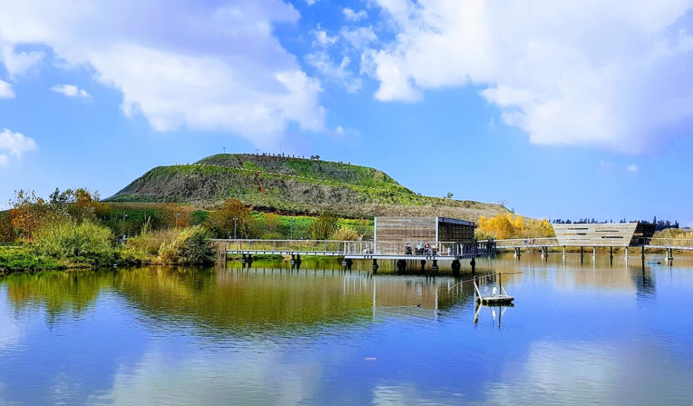פארק אקולוגי הוד השרון
עיריית הוד השרון בשיתוף רשות נחל הירקון יזמו את הקמתו של פארק הוד השרון ובמרכזו - האגם האקולוגי הגדול במדינה, נחל הדר המשוקם ומערכת מובילה מסוגה בעולם לטיהור והשבת מים.
הפארק הינו פארק אקולוגי, הכולל מערכת ייחודית לטיהור והשבת מים והזרמתם לירקון למען שיקומו. זהו פארק ייחודי מסוגו בארץ ובעולם, אשר מממש את עיקרון החזרת המרחבים הטבעיים והיסטוריים של נחל הדר ונחל הירקון לתושבי העיר ועל כן הוחלט על יצירתם של מנגנוני הגנה סטטוטוריים בלתי הפיכים, שישמרו עליהם בעתיד מלחצי הפיתוח המודרני.
בשלב ראשון, משתרע הפארק על פני 200 דונמים והוא עתיד לגדול עד לשטח של כ 1400 דונמים. במרכזו, אגם אקולוגי המחבר את אגני האחו לח, אגני טיהור לחים, אליהם זורמים מים ממכון הטיהור של העיר ומהם זורמים המים המטוהרים לנחל הדר.
בסופו של ההליך, מושבים מידי שנה כ 12- מיליון קוב מים מטוהרים לירקון כחלק מהפרויקט הלאומי לגאולתו.
הפארק נפתח לראשונה לציבור הרחב בחודש מרץ 2018 לתקופת הרצה, במהלכה זכה הפרויקט במקום הראשון בתחרות אות העיצוב הישראלי לשנת 2018.
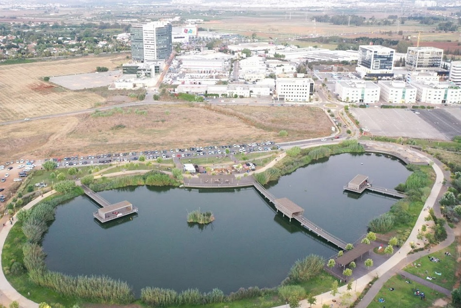 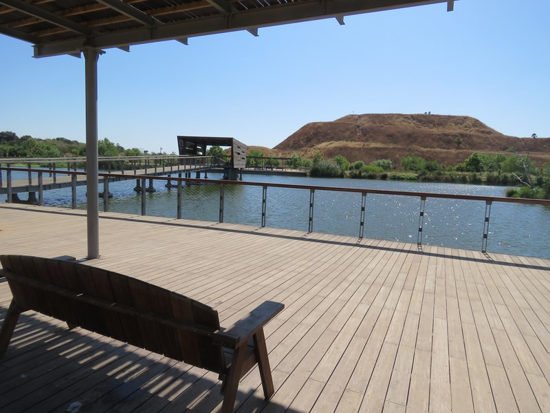המפל הנסתר
פינת חמד יפה ונסתרת בשרון. המפל הנסתר נוצר על ידי סכר מלאכותי אשר נבנה באזור. חלקו העליון של המפל מהווה נקודת הסיום של "הירקון הנקי" שבו מוזרמים מי מעיינות הירקון. באזור החלק התחתון של המפל מתחבר נחל קנה לירקון וכאן מתחיל "הירקון התיכון" עד ל"שבע טחנות" שם מתחיל "הירקון המלוח" שמסתיים בשפך הירקון לים התיכון. נחל קנה מזרים לחלק התחתון של המפל מי שופכין אך אלו מטוהרים בטיהור שלישוני.
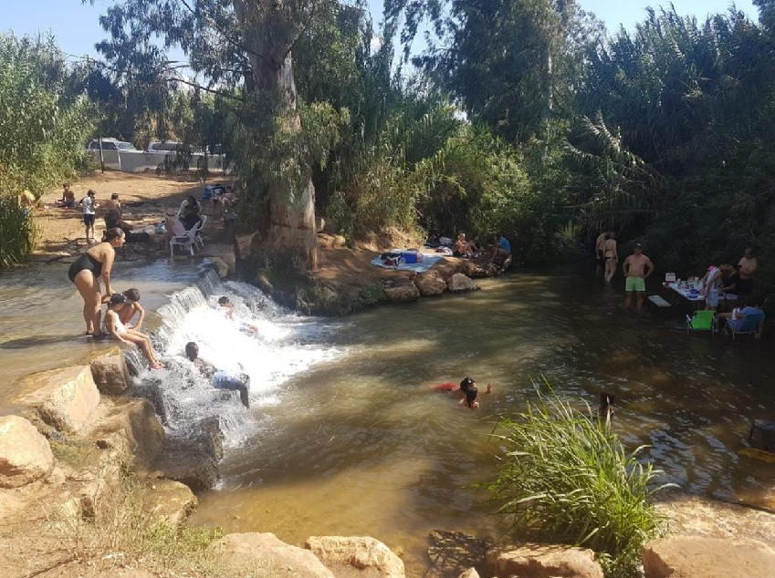בית לאה
בית פרדס היסטורי מהמאה ה-19, הניצב על הגדה הצפונית של נחל הירקון סמוך לסכר נווה ירק לא הרחק מהמושב נווה ירק. לפי האגדה – לפני כמה עשרות שנים היה על המבנה גרפיטי עם כיתוב "לאה המקומטת" וכך זכה המקום מאז לשם "בית לאה"
המבנה הוקם במאה ה-19, בלב פרדסים והוא בן שתי קומות. בקומה הראשונה שכן מתקן שאיבה שבאמצעותו שאבו מים מנחל הירקון להשקיית הפרדס הסמוך. כרבים מבתי הפרדס ההיסטוריים, גם בית זה נבנה בשלבים. ראשיתו במבנה בן קומה אחת, שבו שכן מכון שאיבה ששאב מים מנחל הירקון להשקיית הפרדס הסמוך. בחדר קטן, מצפון לחדר המשאבות, התגורר כנראה הביארג'י ("איש הבאר") שטיפל בפרדס. סקר שנערך במבנה גילה שתחילה שאבו מים במנוע קטן ואחר-כך החליפו אותו במנוע חזק יותר, ולשם חיזוק ועיגון המנוע נוספו ברצפה יציקות בטון. בשלב כלשהו הוסיפו בעלי הפרדס קומה שנייה. ייתכן שהקומה השנייה שימשה כבית קיט ונופש לבעלי הפרדס.
המבנה נמצא בשטח המועצה האזורית דרום השרון, בסמוך למושב נווה ירק. במשך שנים הוא נמצא במצב כללי של הזנחה, נטוש וסדוק וממתין לשיקומו.
סמוך לבית לאה נמצא "סכר נווה ירק" והאזור הנו פנינת טבע ייחודית שמושכת מטיילים רבים.
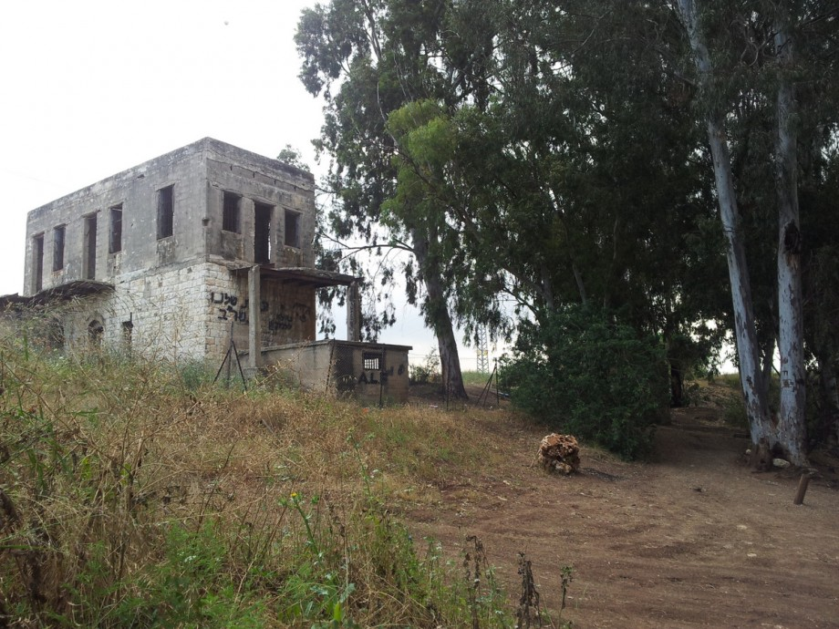כנף לבנה
סכר שאינו טבעי בנחל הירקון בין אבו רבאח לבית לאה. הסכר נועד לאפשר שאיבת מים מהירקון ואגב כך להעשיר את מי הנחל בחמצן שנחוץ לדגה בנחל. על דגי הירקון – מצורף לינק לאתר רשות נחל הירקון.
כמו כן רשות נחל הירקון התקינה בסכר "סולם דגים" שמאפשר לדגים לטפס במעלה הנחל. הסכר נקרא "כנף לבנה" כי במקום זה שכנה מפטמת אווזים, שנבנתה על בית המשאבות ההיסטורי.
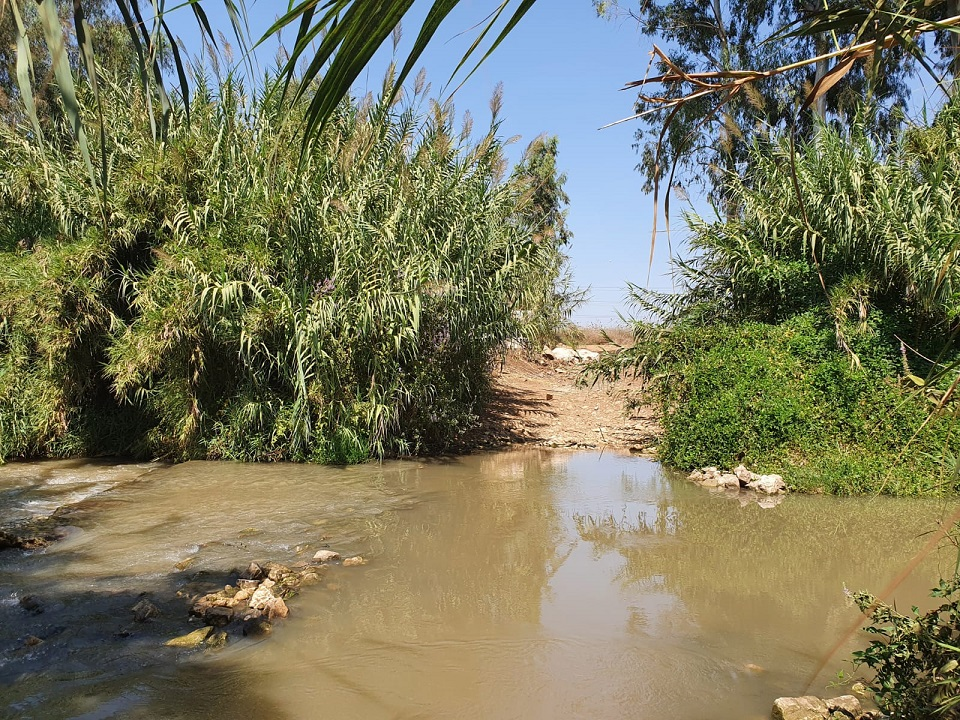 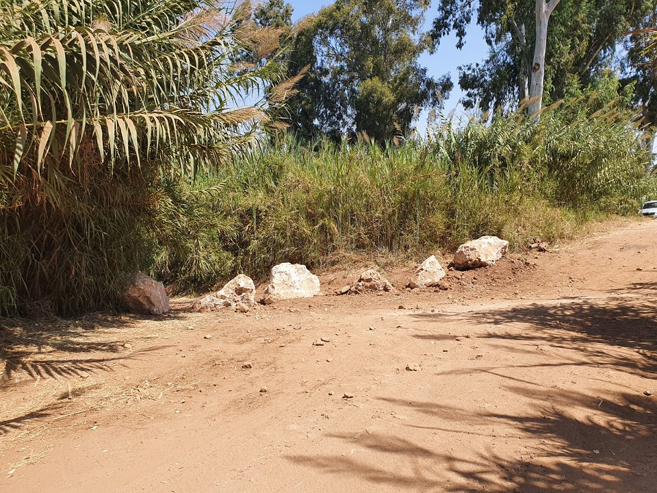 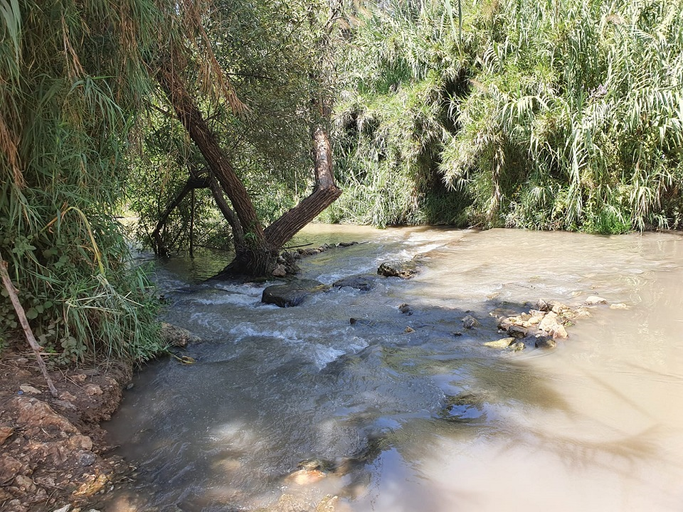טחנת אבו רבאח
טחנת קמח שהוקמה בסוף המאה ה-19 על ידי השייח אבו רבאח, על גבי שרידי טחנה קדומה יותר. בשנת 1913 הותקנו בה שתי טורבינות שהפעילו שבע זוגות של אבני ריחיים, שפעלו עד מלחמת השחרור. הטחנה שוקמה ב-2004 על ידי המועצה לשימור אתרים היסטוריים, אך היא סגורה למבקרים בחלקה הפנימי. במתחם אבו רבאח קיים מעבר שמתאים גם לרכבים ואופנועים למעבר בין שני צדי הירקון. סמוך לטחנת הקמח ההיסטורית, נמצאות פינות חמד לציבור המטיילים.
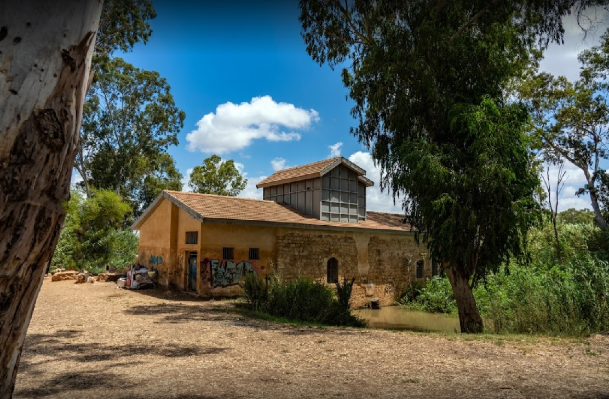 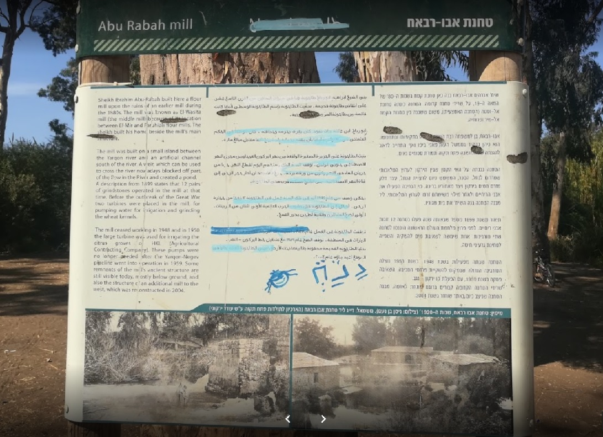סכר תע"ש
סכר שאינו טבעי בנחל הירקון בסמוך למפעל תע"ש. הסכר נועד לאפשר שאיבת מים מהירקון ואגב כך להעשיר את מי הנחל בחמצן שנחוץ לדגה בנחל. על דגי הירקון – מצורף לינק לאתר רשות נחל הירקון.
כמו כן רשות נחל הירקון התקינה בסכר "סולם דגים" שמאפשר לדגים לטפס במעלה הנחל.
בית המשאבות
משמש תחנת שאיבה של מי ירקון להשקיית הפרדסים. המבנה נמצא על עמודים כדי שלא יוצף כאשר נחל הירקון עולה בחורף על גדותיו. גובה המים בהצפה יכול להגיע לכארבעה מטר מעבר לגובה מי הנחל בשגרה.
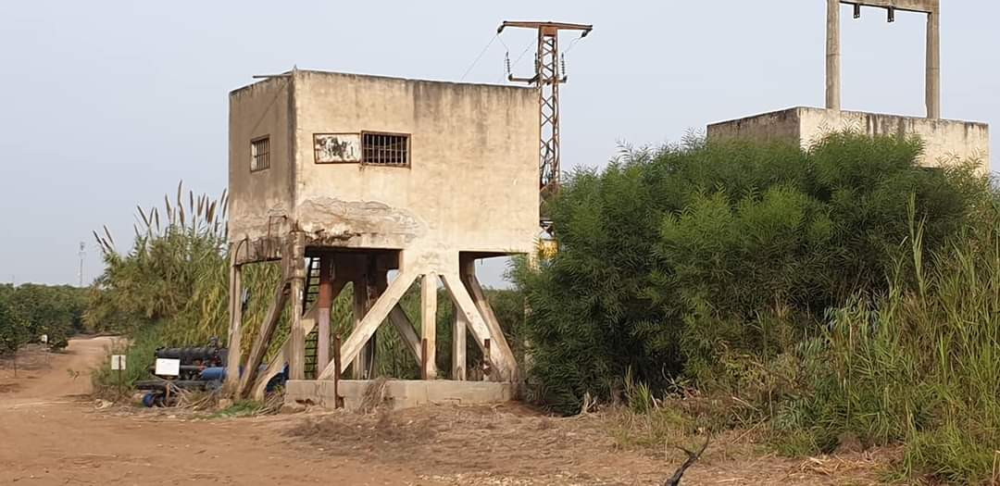סכר חקלאי
סכר שאינו טבעי בלב האיזור החקלאי של הירקון. הסכר נועד לאפשר שאיבת מים מהירקון, ואגב כך להעשיר את מי הנחל בחמצן שנחוץ לדגה בנחל. על דגי הירקון – מצורף לינק לאתר רשות נחל הירקון.
כמו כן רשות נחל הירקון התקינה בסכר "סולם דגים" שמאפשר לדגים לטפס במעלה הנחל.
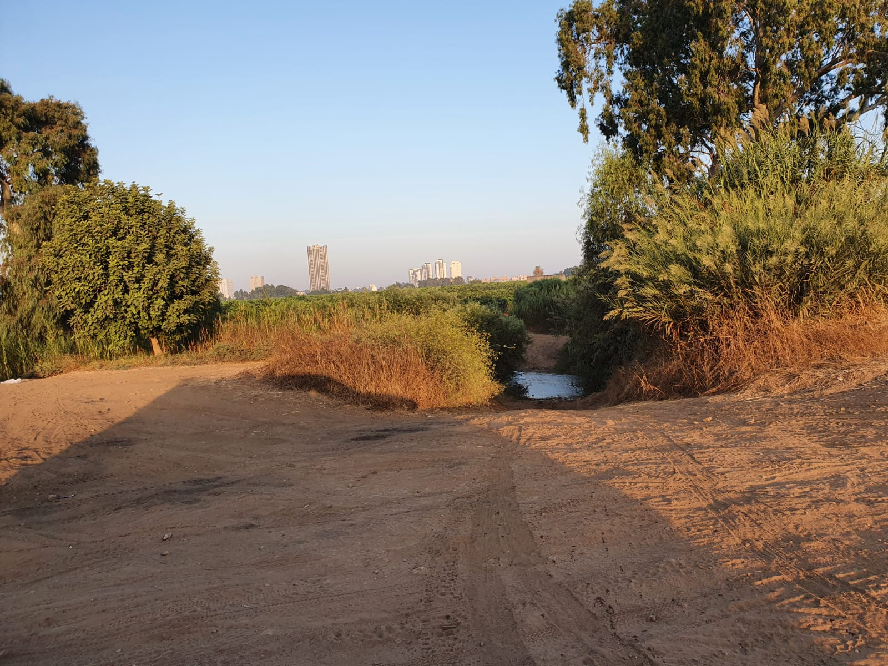 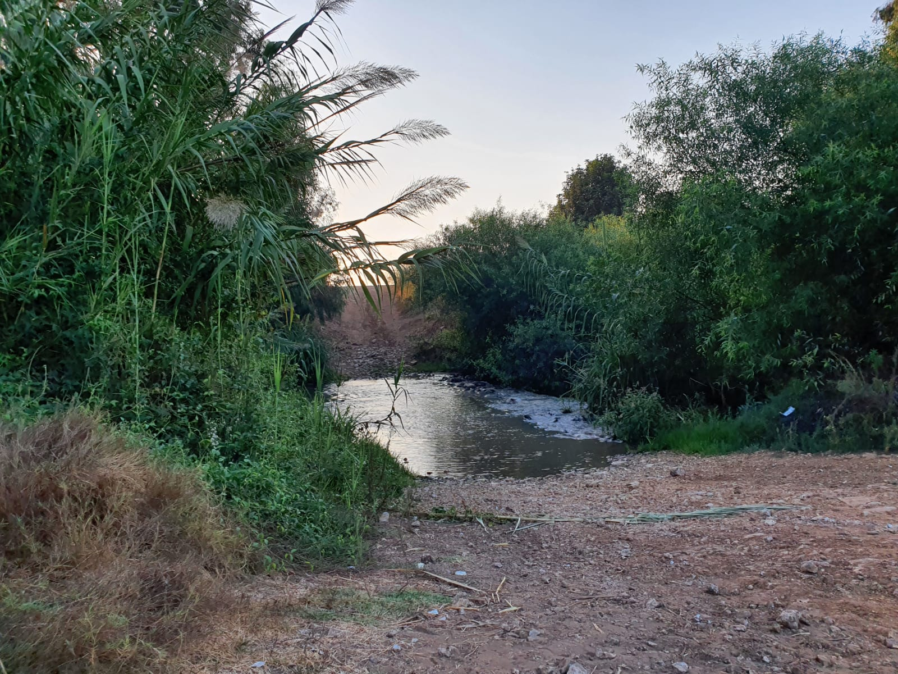גשר חקלאי
גשר על נחל הירקון בלב האזור החקלאי. מיועד להולכי רגל ורוכבי אופניים בלבד. מעקה הגשר מופרד לכמה חלקים ובכל אחד מהם פין גזירה, כך שבעת שיטפונות, לחץ המים קורע את פין הגזירה והמעקה עובר למצב אופקי ואינו נשבר.
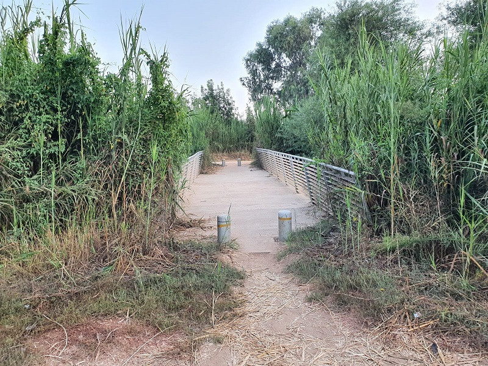 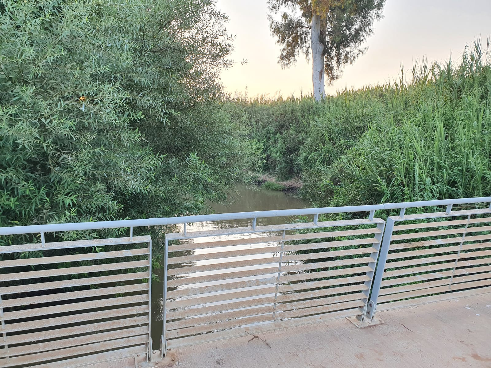 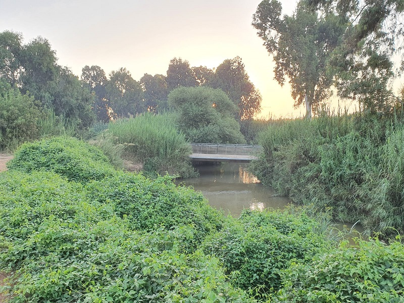גשר טורקי
גשר על דרך יפו-שכם ההיסטורית, שבנו הטורקים מעל נחל שילה. גשר שני שהיה ממוקם מעל הירקון (סמוך לגשר פרוחיה כיום) פוצץ על ידי הטורקים במלחמת העולם הראשונה כדי למנוע מהבריטים לחצות את הנחל.
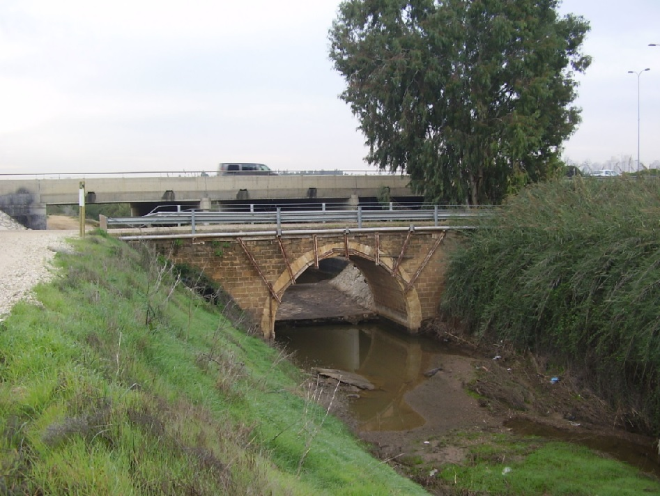גשר פרוחיה
גשר על נחל הירקון באיזור שבו שכן בעבר הכפר הערבי פרוחיה. מיועד להולכי רגל ורוכבי אופניים בלבד. מעקה הגשר מופרד לכמה חלקים ובכל אחד מהם פין גזירה, כך שבעת שיטפונות, לחץ המים קורע את פין הגזירה והמעקה עובר למצב אופקי ואינו נשבר.
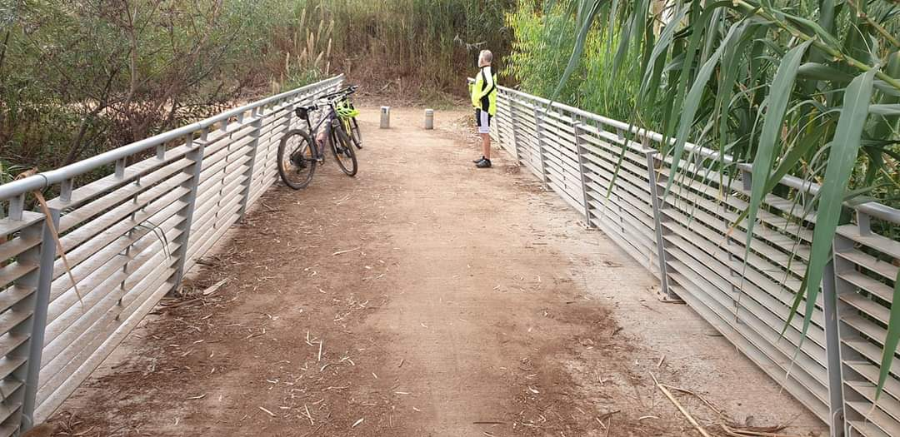 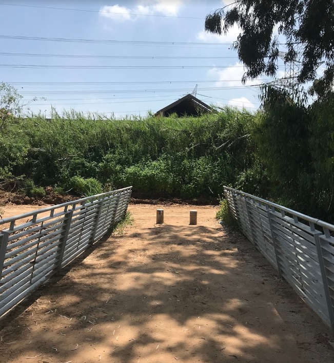בית פרדס

בית הפרדס נמצא באזור הכפר פרוחיה (כפר שמיקומו בתחנת חברת החשמל כיום והוא נהרס כליל). המבנה הוקם בסוף המאה ה-19 או ממש תחילת המאה ה-20 על ידי הערבים שעבדו קרקעות חקלאיות באזור. בית הפרדס או בשמו הערבי "בייארה" שימש כמרכז חקלאי שכלל באר, ואכסניה לחיות. בהמשך בנו גם אכסניה לפועלים ואז המבנה הוקף בחומה. המבנה בולט ביופיו, משולבים בו רעפי מרסיי, ויש בו שער כניסה בחזית המערבית של המבנה. בשנות החמישים עבר המבנה לבעלות יכין חקל ואז נבנו לצידו בתי משאבות שיש להן שרידים עדיין. נעשה בשנים האחרונות ניסיון חשוב לשימור האתר אך השיקום נקלע לתסבוכת משפטית, שמונעת כיום את השלמתו.
בית הבטון
המבנה הראשון בארץ ישראל שנבנה מבטון כבית משאבות של חברת ההשקייה "פלסתינה"שנוסדה בשנת 1912 על ידי בצלאל יפה, במטרה לספק מים לפרדסי הסביבה. אחרי מותו נמכר הבית לחברת "ירקון" שבבעלות חברת "מקורות". גם מבנה זה ממתין לשיקום הסטורי.
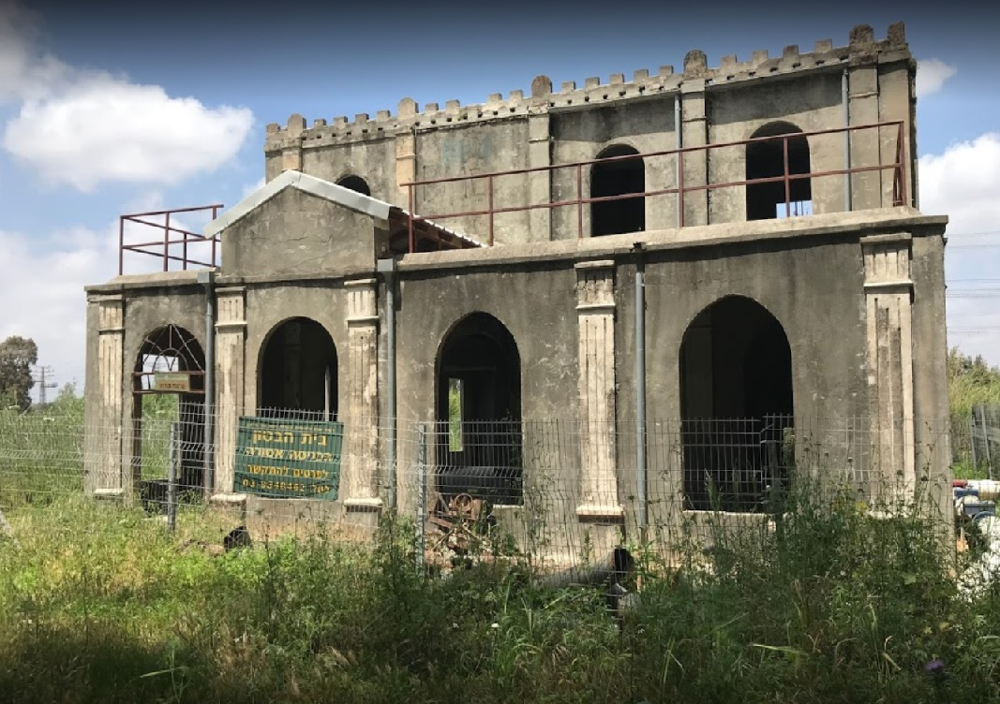 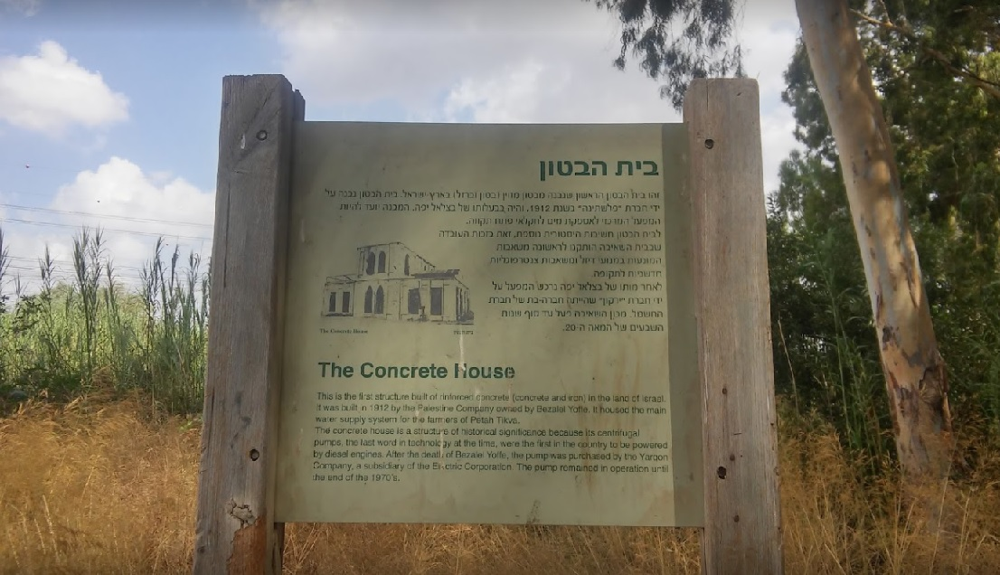כפר הבפטיסטים
הכפר הוקם בשנת 1956 על ידי "עמותת כנס הבפטיסטים", קבוצה של מאמינים נוצרים-בפטיסטים מארצות הברית, במטרה להקים במקום חווה חקלאית.
בשנותיו הראשונות שימש המקום כבית יתומים, מאוחר יותר הוקם בכפר בית ספר, שנסגר בשנת 1972 . כיום יש במקום אכסניה של בני העדה, כנסייה לחברי הקהילה הבפטיסטית, שבה מתקיימות תפילות בשבתות וחגים נוצריים, ומגרש בייסבול. במקום מתקיימים אירועים חברתיים וחינוכיים. בכפר שוכן גם מרכז "נתיבה", אשר מופעל על ידי יהודים מומרים ונוצרים פרוטסטנטים, ומעביר כנסי לימוד וחינוך אוונגליסטי/בפטיסטי לנערים וחיילים מקרב קהילת ה"יהודים המשיחיים" ונוצרים פרוטסטנטים אשר חיים בישראל.
מהיוזמה החקלאית נשאר במקום פרדס הדרים. הכפר מהווה נקודה בתוואי הארצי של שביל ישראל.
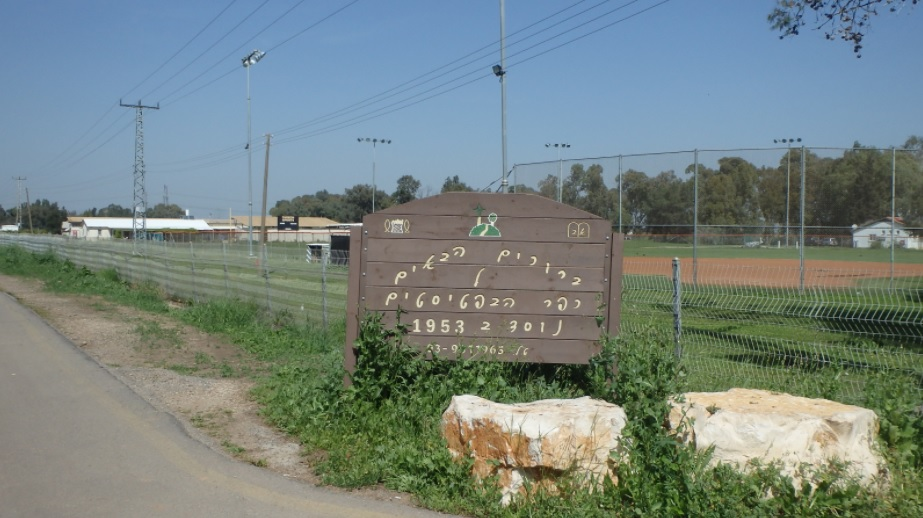 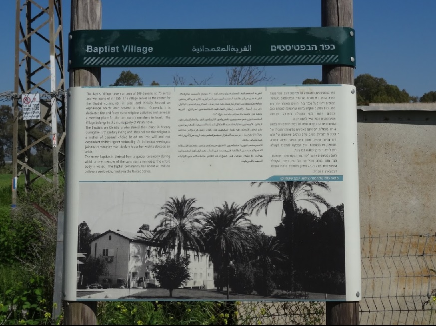גן לאומי מקורות הירקון
גן לאומי ליד מקורות הירקון, בו מתחיל "הירקון הנקי". הגן באחריות רשות שמורות הטבע והגנים הלאומיים והוא מרכז סביבו בעלי חיים וצמחיה עשירה. בשטח ממוקמים מתקני נופש ובילוי לציבור הרחב ומומלץ מאוד לבקר בו.
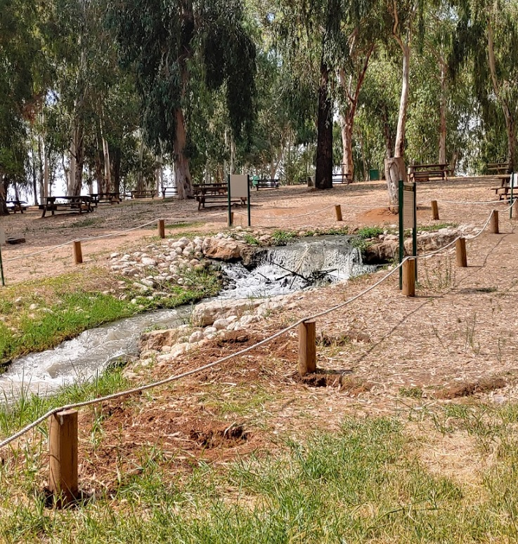בריכת הנופרים
שריד אחרון של אזור הנביעות הטבעי. חלק ממעיינות הירקון זורמים באופן חופשי לנחל הירקון ויוצרים את תחילת האפיק. ייחודה של הברכה בצמחייה שבמקום ובעיקר בנופר הצהוב. אלה הם שרידי הצמחייה הטבעית של הירקון, שהידלדלה עקב צמצום שפיעת המעיינות.
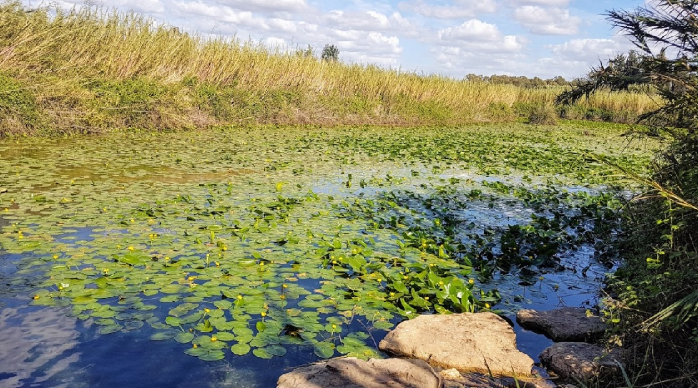הפילבוקס
באנגלית: Pillbox הוא הכינוי שניתן לעמדות שמירה מסוג בלוקהאוס עשויות בטון שהקימו הבריטים בארץ ישראל בתקופת המנדט, החל במאורעות תרצ"ו. מקור השם בצורתן הגלילית שהזכירה קופסת גלולות (Pill Box)עמדת שמירה זו נמצאת על מסילת הרכבת הישנה מפתח תקווה לראש העין, שפעלה בתקופת המרד הערבי (1936). השמירה הוטלה על "חיל נוטרי הרכבת".
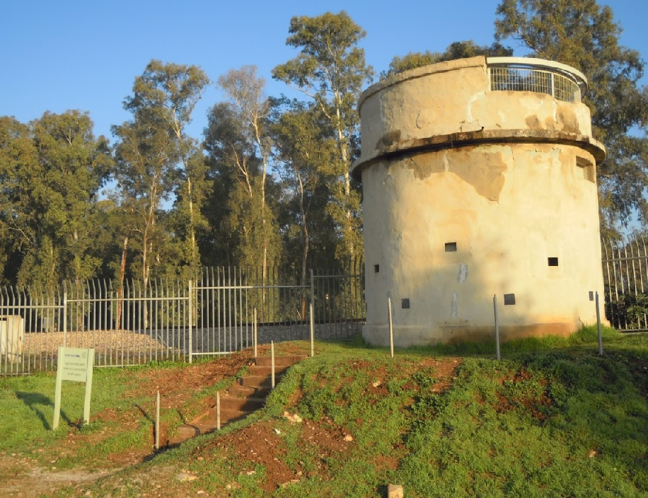מעבר אירי
נקודת מעבר של כביש על פני אפיק נחל אכזב לא עמוק, שחוזקה בבטון ואינה גשר. המעבר האירי נועד להקל על מעבר של רכב בנחל בשעת שיטפון. המעבר נמצא על נחל קנה שהנו אחד מיובלי ירקון. נחל קנה מזרים בכל ימות השנה גם מי שופכין מטוהרים בטיהור שלישוני, שזורמים אל הירקון ומחזקים את זרימתו.
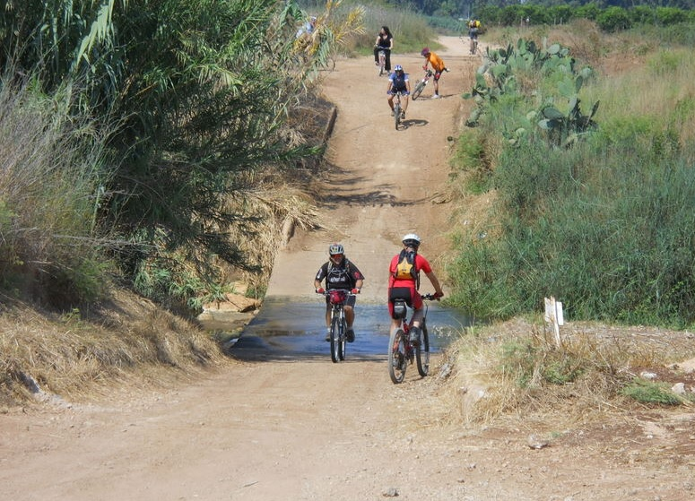טחנת אל מיר
היה כפר ערבי קטן בסמוך למקורות הנחל שתושביו התפרנסו מחקלאות. הוקם בתחילת המאה ה-19 ויושב על ידי מהגרים מצריים וסודאניים שהובאו לאזור. הישוב חרב במהלך מלחמת העצמאות.
פירוש שם הכפר בעברית הוא "המעבר", וזאת על-שם המעבר המרוצף מעל הירקון שהיה בשטח הכפר.
בשטח הכפר פעלה עד סוף המאה ה-19 "טחנת אל-פוקא" (הטחנה העליונה) - טחנת הקמח הראשונה לאורך הירקון; הטחנה הייתה עתיקה וגדולה, וכללה 13 זוגות ריחיים. ניתן לראות כיום את שרידי הטחנה שנמצאת בשטח הגן הלאומי – מקורות הירקון.
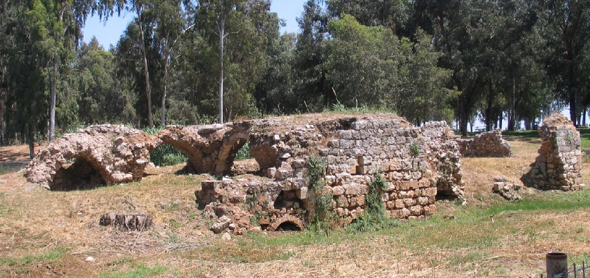גשר הדר
גשר על נחל הדר שנבנה בתחילת המאה העשרים, ושימש את הפרדסנים להעברת פרי הדר באמצעות קרוניות (טרזינות) מפרדס בחריה לבית האריזה.
בשנת 1904 הגיעו לארץ יהודים בעלי הון שהיו מוכנים להשקיע כסף בנטיעת פרדסים ולידם ציבור החלוצים עולי העלייה השנייה שחיפשו מקורות פרנסה ותעסוקה. כך נוצר מוקד חדש של תעסוקה. גידול הפרדסים התפשט מזרחה לאורך הירקון מכיוון שאחת הבעיות המרכזיות בגידול ההדרים הייתה בעיית ההשקיה של העצים. בעלי הפרדסים ניצלו את היתרון בשאיבת מים ישירות מהנחל ואת העובדה כי קרקעות השרון התאימו לגידול ההדרים. כך נוצר מצב שבקרב קבוצה מאנשי היישוב העברי החדש ביפו התגבשה קבוצה בהנהגת ר` שמעון רוקח לנטוע פרדס גדול על גדות הירקון ולנצל את מימיו להשקיה. בשנת 1904, אחרי חיפושים נמצא שטח בן 600 דונם משני צידי הירקון. אחרי רכישת הקרקעות בדיוק בנקודה בה נשפך נחל הדר אל הירקון, למרגלות תל קנה, פנו חברי הקבוצה להקמת מכון המים של הפרדס. בערבית נקרא המקום `בוכריה`. בעצת ר` מיכל יחיאל פינס הוחלט לעברת את השם ולהעניק לו גוון עברי - `פרדס בחר-יה. פרדס `בחריה` ניטע במהלך שנת 1905, ובמשך שנים נחשב לפרדס הגדול בארץ. בעליו הכניסו חידושים ושיפורים בכל הנוגע לשיטות נטיעה ועיבוד. בין היתר נטעו גם 200 דונם של עצי פרי נשירים כמו תפוחים, אגסים, אפרסקים, שזיפים וחבושים. היה בכך חידוש גדול והמקום תפקד גם כתחנת ניסיונות ואקלום למציאת הזנים המתאימים ביותר לארץ. עד מלחמת העולם הראשונה פרנס הפרדס בכבוד רב את בעליו כמו גם את קבוצות הפועלים הרבות שמצאו שם עבודה קבועה לאורך זמן. ניסיונות שונים של ערביי הסביבה ובראשם ערביי אבו קישק להתנכל לפרדס הסתיימו בדרך כלל בסולחה או בתלונות שהוגשו לשלטונות התורכיים. אך בשנת בשנת 1915 חל מפנה בתולדות הפרדס. באותה שנה שהתחילה מלחמת העולם הראשונה הגיע גם הארבה ארצה. למרות תקוותם שהארבה יפסח על הפרדס שהיה על גדת הירקון הגיעו הזחלים באחד הגלים המאוחרים וכמעט חסלו את כל העצים. לאורך כל מלחמת העולם הראשונה עמדו העצים בשיממונם ללא פרי ורק כעבור זמן התחילו להתאושש. בראשית שנות העשרים כבר התחילו לתת פרי. זחלי הארבה שנקברו באדמת הפרדס שימשו כזבל האורגאני הטוב ביותר שניתן היה להשיג באותם ימים.
פרדס בחרייה הפך לסמל של מסירות, כשרון והתמדה. לאורך השנים שימש הפרדס, כמנוף לקידום ענף הפרדסנות בשרון, קבוצות פועלים מנהלי עבודה השתלמו ולמדו בו את העבודה.
כיום גשר הדר התדרדר וממתין לשיקום בטיחותי והיסטורי של עריית הוד השרון, שהגשר נמצא בתחום שיפוטה. הנחל היה בעבר נחל אכזב, אך מאז הקמת הפארק האקולוגי בהוד השרון בשנת 2015, מוזרמים מים מטוהרים מהפארק האקולוגי לירקון דרך נחל הדר כל ימות השנה.
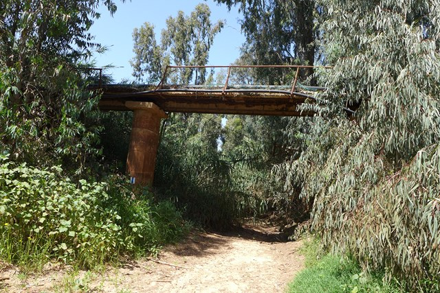 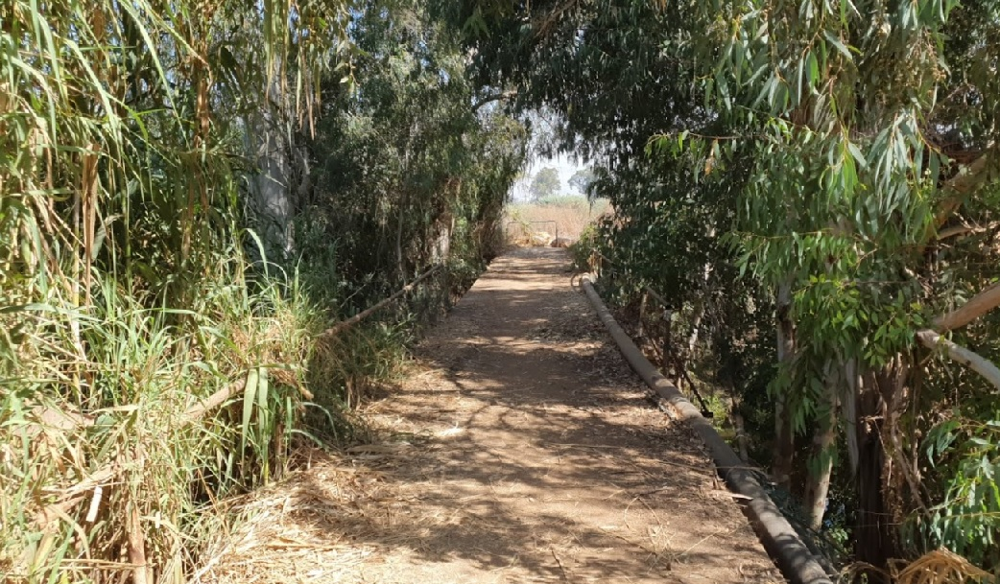גן לאומי תל אפק
אנטיפטריס הייתה אחת הערים החשובות בארץ ישראל. העיר שלטה על מעבר אפק, על אגן הירקון ועל דרום השרון. המצודה העותומאנית בינאר באשי משנת 1571 היא השריד הבולט ביותר במקום. המצודה בנויה על גבי בית המושל מהתקופה הכנענית ולצידה – שרידי העיר הרומית ביזנטית אנטיפטריס.
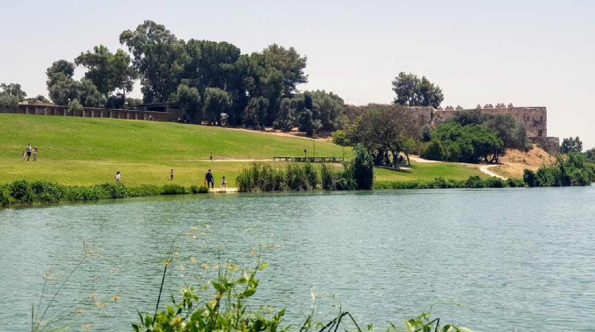מבצר אנטיפטריס
אנטיפטריס הייתה אחת הערים החשובות בארץ ישראל. העיר שלטה על מעבר אפק, על אגן הירקון ועל דרום השרון. המצודה העותומאנית בינאר באשי משנת 1571 היא השריד הבולט ביותר במקום. המצודה בנויה על גבי בית המושל מהתקופה הכנענית ולצידה – שרידי העיר הרומית ביזנטית אנטיפטריס.
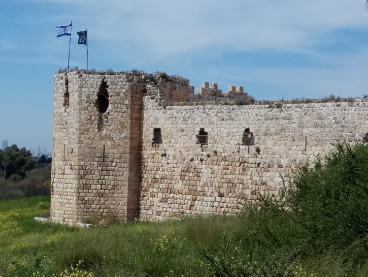גבעת הכלניות
הגבעה נמצאת מתחת להר הזבל, ובעונת הפריחה בין דצמבר לאפריל ניתן לחזות במינים שונים של הפרח הססגוני גם מבלי להרחיק לדרום. מדובר בריאה ירוקה מרהיבה וממנה גם תצפית יפה על שמורת נחל הירקון.
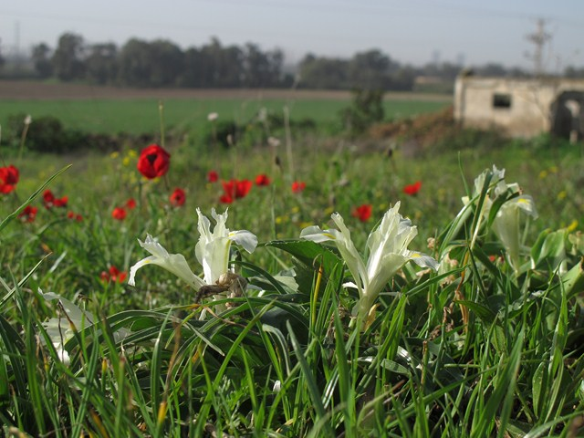